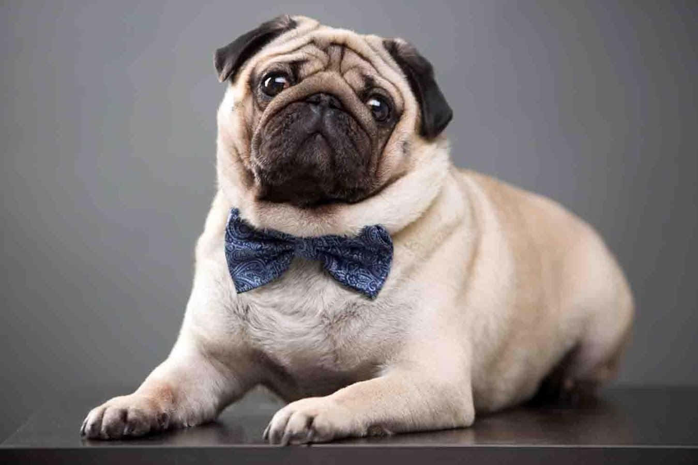
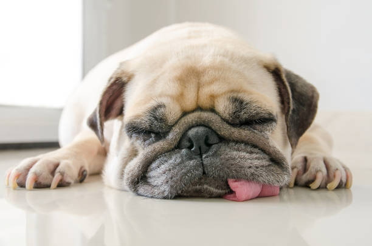
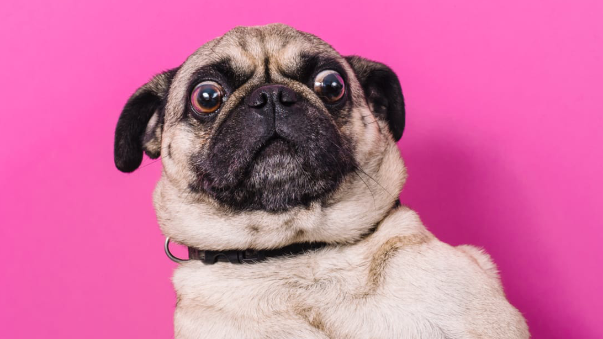

« Une vie sans Carlin est possible. Mais dénuée de sens » disait Loriot.
Et ce pour une bonne raison : Le Carlin est un charmeur turbulent et un fidèle chien de compagnie attachant et affectueux. Nul ne peut résister à son visage et à ses grands yeux. Mais ne vous laissez pas duper : Les Carlins savent comment faire pour obtenir les bonnes grâces de leurs maîtres.
Et ce pour une bonne raison : Le Carlin est un charmeur turbulent et un fidèle chien de compagnie attachant et affectueux. Nul ne peut résister à son visage et à ses grands yeux. Mais ne vous laissez pas duper : Les Carlins savent comment faire pour obtenir les bonnes grâces de leurs maîtres.


Le petit chien de l’empereur

Caractéristiques de carlin
Avec une taille pouvant aller jusqu’à 32 cm de hauteur d’épaule, le Carlin fait partie de ce que l’on appelle les mini molosses.
Avec une taille pouvant aller jusqu’à 32 cm de hauteur d’épaule, le Carlin fait partie de ce que l’on appelle les mini molosses.